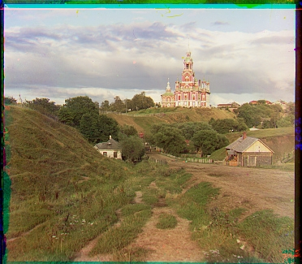

baseline

SSD

Gradient

Name: Yuanteng Chen
Cal ID: 3039725444
In experiment, I use Python 3.7 and OpenCV 4.5.1 for image processing:
pip install opencv-python
First, I mapped the value of the image from (0,255) to between (0,1) for convenience of calculation.
And after finishing alignment, denormalization is necessary otherwise we will see totally black image
as results.
As the raw .tif image is stack in height dimension, I split it into three slices in height dimension.
(blue , green, red)
Because we can observe noticeable black shadows around the image,
which affect our judgment of the alignment result,
here I made the same crop of the image for all three channels.
In code, I set the default crop rate as 2.5%.
In order to explore basic alignment methods, I set cathedral.jpg as an example because of its low resolution.
In this part, I tried three metrics in same window_size(20):
1: Sum of Squared Differences (SSD)
2: Normalized Cross-Correlation (NCC)
3: Gradient of images
def Gradients_metric(img1, img2):
# compute the gradient
gradient_img1 = cv2.Sobel(img1, cv2.CV_32FC1, 1, 1, ksize=3)
gradient_img2 = cv2.Sobel(img2, cv2.CV_32FC1, 1, 1, ksize=3)
# compute the difference
diff = cv2.absdiff(gradient_img1, gradient_img2)
# average difference
mean_diff = np.mean(diff)
return mean_diff
Code explanation:
This code calculates the similarity between two images using gradients:
(1)The cv2.Sobel function is used to compute the gradient images of img1 and img2.
The gradient represents the rate of change of pixel intensities in the image.
The function calculates the first-order derivatives of the images in the x and y
directions using the Sobel operator.
(2)Using cv2.absdiff to measure the difference between the two images in terms of their gradients.
(3)Average discrepancy is calculated by taking the mean of all the pixel differences in the diff image.
This value represents the average dissimilarity between the gradients of the two input images.
To evaluate the aligned result, I download the The alignment results given by the official website as SOTA.
def image_pyramid(img1, img2, window_size=15, level = 3, metric=1):
#param level: level of pyramid
c_img1 = copy.deepcopy(img1)
c_img2 = copy.deepcopy(img2)
origin_size = c_img1.shape
best_displacement = (0,0)
for i in range(level):
rate = 2 ** (level-i-1)
w_size = window_size // (2 ** i)
if(rate == 1):
d_img1 = c_img1
d_img2 = c_img2
else:
d_img1 = cv2.resize(c_img1, (origin_size[1] // rate, origin_size[0] // rate))
d_img2 = cv2.resize(c_img2, (origin_size[1] // rate, origin_size[0] // rate))
_, best_displacement = find_best_align(d_img1, d_img2, \
window_size=w_size, center=best_displacement, metric=metric)
best_align = trans_pic(c_img2, best_displacement[0], best_displacement[1])
return best_align, best_displacement
Code explanation:
Why the images of baseline and SSD can't be displayed normally?